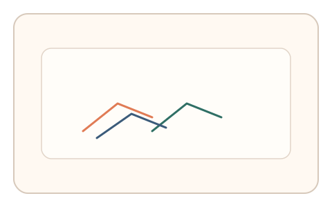
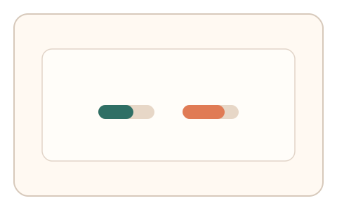

#153
Reverse Brainstorming - Round 1
已扩展
多段一致性门槛
将任务拆为多段并做相对比较，要求节律、路径或偏差在跨段保持一致。
概念原文
将任务拆为 2–3 段，要求跨段信号在节律/路径/偏差上保持一致，判定依赖任务内相对比较。
单次“猜对”无效，必须保持一致性，显著抬高随机通过率。
研究背景
单次作答易被随机或脚本命中，而跨段一致性更难伪造。真实用户在连续任务中会呈现相似但非完全一致的行为结构。
核心机制
- 任务拆分为 2–3 段连续流程。
- 每段采集节律/路径/偏差信号。
- 计算跨段相对一致性与漂移量。
- 以一致性阈值作为判定核心。
用户流程
- 步骤 1：用户完成第 1 段任务。
- 步骤 2：继续完成第 2–3 段任务。
- 步骤 3：系统比较跨段一致性并判定。
判定信号
跨段节律一致性
真实用户节律结构相似但存在微漂移。
路径/偏差相对差
相对差反映稳定策略与自然波动。
判定逻辑
一致性需落在人类区间；过度一致或随机漂移判异常。
对抗面
- 脚本重放单段轨迹
- 随机生成多段噪声伪装
防御与缓解
- 随机化每段起始参数
- 加入段间短间隔打断重放
- 多维信号耦合评估
可达性与风险
允许使用更慢节奏或替代通道完成多段。
- 多段任务增加疲劳
- 设备延迟影响一致性
可视化状态

状态 1：多段任务
任务分为多段连续流程。

状态 2：跨段信号
比较各段节律与路径。

状态 3：一致性判定
以一致性阈值输出结果。
参考资料
Behavioral biometrics
说明行为一致性作为识别依据。
Signal detection theory
说明阈值判定与一致性评估。